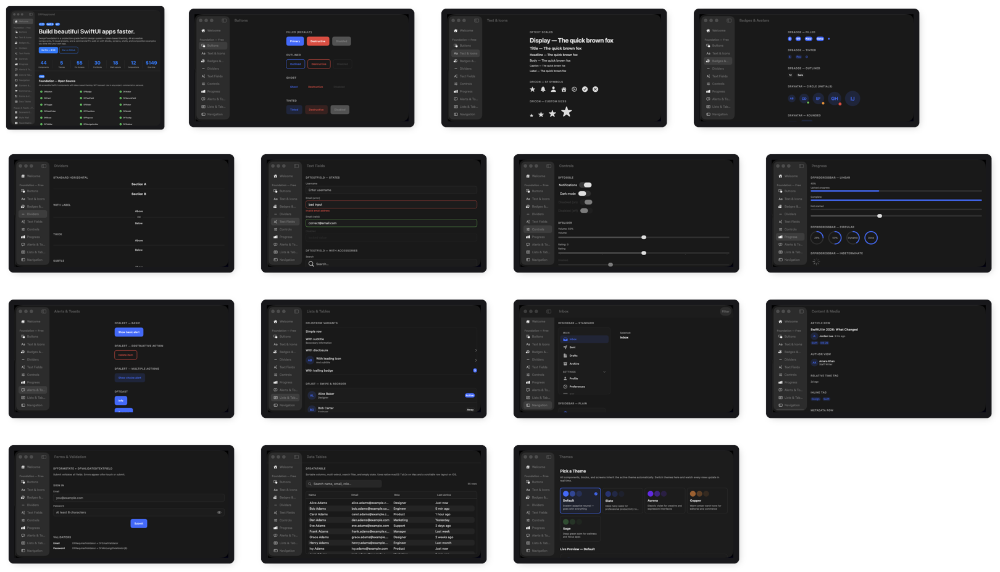

DesignFoundation
A production-grade SwiftUI design system. Token-based theming, protocol-driven style swapping, first-class Liquid Glass support, and a full component library — one dependency, instantly consistent across every screen.
DesignFoundation mirrors SwiftUI's own ButtonStyle pattern across every component.
Inject a DFTheme once at the app root; every component reads its colors, typography,
spacing, and radius from the nearest theme in the environment. Override any subtree. Write custom styles
by implementing one function. Zero hardcoded values anywhere.

Installation
Xcode
File → Add Package Dependencies, paste the URL below, and choose Up to Next Major from version 1.7.1.
https://github.com/NerdSnipe-Inc/design-foundation
Package.swift
// Package.swift dependencies: [ .package(url: "https://github.com/NerdSnipe-Inc/design-foundation", from: "1.7.1") ], targets: [ .target(name: "YourApp", dependencies: [ .product(name: "DesignFoundation", package: "design-foundation") ]) ]
Quick Start
import DesignFoundation @main struct MyApp: App { var body: some Scene { WindowGroup { ContentView() .dfTheme(DFTheme(colors: DFColorTokens(primary: .indigo))) } } } // In any view: DFButton("Get Started") { /* action */ } DFTextField("Email", text: $email) .dfTextFieldStyle(.outlined) DFCard { DFText("Hello", scale: .headline) }
DFTheme
A single DFTheme struct propagates through SwiftUI's environment.
Inject it once at the root and every component responds automatically. Override at any subtree depth.
ContentView() .dfTheme(DFTheme( colors: DFColorTokens( primary: .indigo ), spacing: DFSpacingTokens(md: 20), radius: DFRadiusTokens(md: 12) ))
.dfTheme(...) to apply a different palette to just that section (e.g. a dark hero banner inside a light screen).
Tokens
Every component reads exclusively from these token namespaces — no hardcoded values anywhere in the library.
Colors — theme.colors
| Token | Purpose |
|---|---|
| .primary | Brand / interactive accent |
| .surface | Card and panel backgrounds |
| .surfaceElevated | Raised overlays, popovers |
| .textPrimary | Body and heading text |
| .textSecondary | Labels, placeholders, captions |
| .textDisabled | Disabled control labels |
| .border | Strokes, dividers |
| .interactiveFill | Input field backgrounds |
| .destructive | Delete, danger actions |
| .success / .warning / .info | Semantic status colors |
Spacing — theme.spacing
| Token | Default |
|---|---|
| .xs | 4 pt |
| .sm | 8 pt |
| .md | 12 pt |
| .lg | 16 pt |
| .xl | 24 pt |
| .xxl | 32 pt |
Radius — theme.radius
| Token | Default |
|---|---|
| .none | 0 |
| .sm | 4 pt |
| .md | 8 pt |
| .lg | 12 pt |
| .full | 9999 pt (pill) |
Typography — theme.typography
| Token | Usage |
|---|---|
| .display.font | Hero headlines |
| .title.font | Screen titles |
| .headline.font | Section headers |
| .labelLarge.font | Prominent inline labels |
| .body.font | Body text |
| .bodySmall.font | Secondary body text |
| .label.font | Small UI labels |
| .caption.font | Labels, helper text |
Shadows — theme.shadows
| Token | Fields |
|---|---|
| .none / .sm / .md / .lg | Each a DFShadow: color, radius, x, y |
Animation — theme.animation
| Token | Purpose |
|---|---|
| .fast | Quick state changes (press, toggle) |
| .default | Standard transitions |
| .slow | Emphasis / large layout changes |
Per-component overrides — theme.components
Every field is optional — nil inherits the regular tokens above. Confirmed read directly by component styles (e.g. DFButtonStyle reads theme.components.button.cornerRadius ?? theme.radius.md).
| Sub-namespace | Overrides |
|---|---|
| DFButtonTokens | cornerRadius, horizontalPadding, verticalPadding, labelStyle |
| DFTextFieldTokens | cornerRadius, horizontalPadding, verticalPadding, inputStyle, labelStyle |
| DFCardTokens | cornerRadius, padding |
| DFAvatarTokens | defaultSize, borderWidth |
| DFBadgeTokens | cornerRadius, horizontalPadding, verticalPadding |
| DFIconTokens | defaultSize |
Materials — DFMaterialTokens (iOS/macOS 26+)
surfaceMaterial, elevatedMaterial, preferLiquidGlass. Not yet wired into DFTheme — .glass styles currently use .regularMaterial/.thickMaterial directly rather than reading this type. Documented here so you know it exists, not because it configures anything yet.
Preset Themes
Four opinionated visual identities ship in the box — each with a distinct color palette, corner radius scale, and shadow weight. One modifier; automatic light/dark switching.
// Recommended — auto-adapts to system light/dark MyApp() .dfThemePreset(.aurora) // Force a specific variant PreviewView() .dfTheme(.copperDark)
| Preset | Personality | Radius | Shadows | Best for |
|---|---|---|---|---|
| .slate | Professional, balanced | Default (md 8) | Standard | SaaS, developer tools |
| .aurora | Vibrant, creative | Rounded (md 10) | Soft | Creative tools, social |
| .copper | Warm, editorial | Sharp (md 6) | Defined | Finance, content readers |
| .sage | Calm, organic | Very rounded (md 12) | Airy | Health, wellness |


Theme Presets Guide
Full color palettes, radius and shadow specs, API reference, and power-user patterns.
Style System
Every component exposes a style protocol with a single makeBody(configuration:) method —
the same pattern as SwiftUI's ButtonStyle. Styles propagate through the environment,
compose with each other, and apply hierarchically.
// Apply a style to an entire section VStack { ... } .dfButtonStyle(.outlined) .dfCardStyle(.glass) // Override for a single component DFButton("Delete", role: .destructive) { } .dfButtonStyle(.ghost) // Liquid Glass across your whole UI (iOS/macOS 26+) ContentView() .dfButtonStyle(.glass) .dfCardStyle(.glass) .dfTooltipStyle(.glass)
DF styles aren't limited to DF components — DFButton's style bridge is public, so any native SwiftUI Button can be branded directly while keeping its real content (icons via Label, custom layouts, anything a plain Button supports):
Button { save() } label: { Label("Save", systemImage: "checkmark") } .buttonStyle(.df(.outlined, role: .destructive))
Writing a custom style means implementing one function. All protocols are open; built-in styles are concrete structs you can copy and fork.
struct MyButtonStyle: DFButtonStyle { func makeBody(configuration: DFButtonStyleConfiguration) -> some View { configuration.label .padding(.horizontal, configuration.theme.spacing.lg) .background(configuration.theme.colors.primary) .clipShape(Capsule()) .opacity(configuration.isPressed ? 0.7 : 1) } }
Primitives
| Component | Built-in Styles |
|---|---|
| DFButton | .filled .outlined .ghost .tinted .glass¹ |
| DFText | scale: display, title, headline, labelLarge, body, bodySmall, label, caption |
| DFIcon | SF Symbol wrapper with token-driven size and color |
| DFBadge | .default .subtle .outlined .glass¹ |
| DFAvatar | .circle .rounded .ring .glass¹ — image or initials, presence indicators |
| DFDivider | .standard .thick .subtle — horizontal/vertical, labeled variant |
| DFChip | .filled .tinted .outlined — variants: .label, .labelWithIcon, .dismissible(onDismiss:), .selectable(isSelected:) |
| DFRatingView | .stars (half-star support) .numeric — .readOnly (default) or .interactive(onChange:) |
| DFPriceView | .standard .compact — currency-formatted price display with an optional strikethrough compareAtAmount |
Inputs
All input components share DFValidationState (.none / .valid / .error(String)) for consistent error display.
| Component | Built-in Styles / Notes |
|---|---|
| DFTextField | .outlined .filled |
| DFSecureField | .outlined .filled — reveal toggle built in |
| DFValidatedTextField | Reads/writes a named field on a DFFormState you register validators on separately — DFRequiredValidator, DFEmailValidator, DFMinLengthValidator, DFMaxLengthValidator, DFRegexValidator, or your own DFFieldValidator. |
| DFToggle | .switch .checkbox .glass¹ |
| DFSlider | .standard .labeled .glass¹ |
| DFPicker | .segmented .menu .wheel .glass¹ |
| DFDatePicker | .compact .graphical .wheel .glass¹ |
| DFCheckbox | .default |
| DFRadioPickerView | Single-select inline list of labeled radio rows — distinct from DFPicker's menu/wheel presentation |
| DFQuantityStepper | .bordered (default) .compact — named to avoid colliding with SwiftUI's own Stepper |
// DFFormState — observable state for a set of validated fields let formState = DFFormState(fields: [ "email": [DFRequiredValidator(), DFEmailValidator()], "password": [DFRequiredValidator(), DFMinLengthValidator(minLength: 8)], ]) DFValidatedTextField("Email", field: "email", form: formState) DFSecureField( "Password", text: formState.binding(for: "password"), validationState: formState.validationState(for: "password") ) DFButton("Sign in") { guard formState.validate() else { return } submit(formState.values["email", default: ""], formState.values["password", default: ""]) }
Layout
| Component | Built-in Styles |
|---|---|
| DFCard | .elevated .outlined .filled .glass¹ |
| DFBottomContainer | Applied via .dfBottomBar { } — pins content (a checkout total bar, a "Continue" CTA) to the bottom of a view on a themed surface. No style variants. |
| DFPriceSummaryView | Order-summary layout built from DFPriceLineItem rows, with a .total emphasis row rendering a divider + headline treatment. No style variants. |
| DFEntityRow | Content-rich summary row — media + title/subtitle + trailing metadata — for contacts, orders, and search results. See DFEntityCard for the grid/card-context sibling. |
| DFEntityCard | Grid/card-context sibling of DFEntityRow — vertical media-on-top layout built on DFCard, for product/article grids. |
| DFGrid | Themed LazyVGrid wrapper — columns: .fixed(Int) (default) or .adaptive(minWidth:), spacing read from the theme. |
| DFCarousel | Themed horizontal-scrolling container — native momentum scrolling, no built-in paging/page-indicator (compose your own TabView(.page) if needed). |
Overlays
These are applied as view modifiers (.dfModal(), .dfSheet(), .dfPopover(), .dfTooltip(), .dfPopup()) — not constructed directly like the components above.
| Component | Built-in Styles |
|---|---|
| DFModal | .standard, DFGlassModalStyle()¹² — no .glass shorthand for Modal specifically |
| DFSheet | .standard .compact .glass¹ |
| DFPopover | .arrow .compact .glass¹ |
| DFTooltip | .bubble .glass¹ |
| DFPopup | Applied via .dfPopup(isPresented:configuration:) / .dfPopup(item:configuration:) — centered cards, edge-flush toasts, inset floaters and bottom sheets at nine positions, with eight surface styles (.dfPopupStyle(_:)), DFPopupCard, none/dim/blur backdrops, transitions and tap/outside-tap/drag dismissal. Real recordings below → |
| DFImageGallery | Applied via .dfImageGallery(isPresented:images:initialIndex:) — full-screen swipeable image viewer with page indicator. No style variants. |
| DFCommandPalette | Applied via .dfCommandPalette(isPresented:items:placeholder:onSelect:) — Cmd-K-style search overlay with a filtered results list and full keyboard navigation (↑/↓, Return, Escape). No style variants. |
² DFGlassModalStyle exists but has no .glass convenience accessor like the other overlay styles — construct it directly: .dfModalStyle(DFGlassModalStyle()).
Popups & Toasts New in 1.7.0
One popup engine powers centered cards, edge-flush toasts, inset floaters and bottom sheets. It is a view modifier, .dfPopup(isPresented:) or .dfPopup(item:), configured with a plain DFPopupConfiguration value: a kind, one of nine positions, a transition, a backdrop and the dismissal rules. DFToastQueue and .dfToast() run on the same engine. Every recording below was captured from the real DFPlayground Popup Lab, not mocked up. Surface styles, toast styles, cards, the sheet kind and backdrops are new in 1.7.0.
The clip beside this text is the Theme Tour: all five presets, light and dark, with popups and toasts.
Recorded from the DFPlayground Popup Lab running on iOS 26 (light/dark, DesignFoundation presets).
| API | What it does |
|---|---|
.dfPopup(isPresented:configuration:onDismiss:content:) | Present content in a popup over the view while a Bool binding is true. |
.dfPopup(item:configuration:onDismiss:content:) | Present for an Identifiable item while it is non-nil; changing the item's id restarts auto-dismiss. |
DFPopupConfiguration | Kind, position, transition, optional animation, autoDismissAfter, dismissOnTap, dismissOnOutsideTap, dismissOnDrag, dimsBackground and backdrop. Presets: .centered, .toast(position:autoDismissAfter:dismissOnDrag:), .floater(position:autoDismissAfter:dismissOnDrag:), .sheet(dismissOnDrag:backdrop:dismissOnOutsideTap:). |
DFPopupKind | .center, .toast (full width, flush with the edge), .floater (inset rounded card), .sheet (bottom-anchored, grabber, drag down to dismiss). |
DFPopupPosition | .topLeading .top .topTrailing .leading .center .trailing .bottomLeading .bottom .bottomTrailing. |
DFPopupTransition | .automatic, .slide, .scale, .fade, .none, .asymmetric(insert:remove:). |
DFPopupBackdrop | .none, .dim, .blur. A non-nil configuration.backdrop wins over dimsBackground. |
DFPopupStyle + .dfPopupStyle(_:) | Eight surface styles: .standard .frosted .glass (iOS/macOS 26) .accent .gradient .inverse .outlined .tinted(_:). |
DFPopupCard, DFPopupHeader, DFPopupActions, DFPopupIconBadge, DFPopupAction | Ready-made popup content: icon badge or hero media, title, message, up to three actions, optional close button. |
DFToastStyle + .dfToastStyle(_:) | Eight toast styles: .default .tinted .filled .inverse .frosted .glass (26+) .banner .compact. |
DFToastQueue.show(text:icon:duration:severity:position:title:actionTitle:action:) | One toast at a time, at any of nine positions, with an optional title and trailing action. |
theme.components.popup | DFPopupTokens: cornerRadius, padding, maxWidth (default 420), backdropOpacity (default 0.35). All optional; nil inherits. |
DFPopupHost | The public host view, for embedding a popup layer in a custom container. |
Surface styles
.dfPopupStyle(_:) restyles every popup in a subtree. Eight ship: .standard (hairline border, layered shadow), .frosted, .glass (iOS/macOS 26, honors theme.materials.preferLiquidGlass), .accent, .gradient, .inverse, .outlined and .tinted(_:) (a severity wash). Colored styles pick a foreground that reaches WCAG AA on every fill stop and re-point the default DFButton at the surface, so plain content stays legible in every preset, light and dark. Apply the style above the presenting modifier.
YourContentView()
.dfPopup(isPresented: $showPopup) {
DFPopupCard(
icon: "sparkles",
title: "Orbit Pro",
message: "Unlimited projects and workspaces.",
primaryAction: DFPopupAction("Upgrade") { },
secondaryAction: DFPopupAction("Not now") { showPopup = false }
)
}
.dfPopupStyle(.gradient)// .standard .frosted .glass .accent .gradient .inverse .outlined .tinted(_:)
YourContentView().dfPopupStyle(.frosted)
YourContentView().dfPopupStyle(.tinted(.warning)) // .info .success .warning .error
if #available(iOS 26, macOS 26, *) {
YourContentView().dfPopupStyle(.glass)
}Recorded from the DFPlayground Popup Lab running on iOS 26 (light/dark, DesignFoundation presets).
Popup cards
DFPopupCard is composed popup content: an icon badge or edge-to-edge hero media, a title, a message, up to three actions (primary filled, secondary translucent, tertiary plain text) and an optional close button. iconTint is .brand, .soft or .severity(_:); alignment is .center or .leading. Hero media bleeds to the surface edges and a content slot sits between the message and the actions.
YourContentView().dfPopup(isPresented: $showPopup) {
DFPopupCard(
icon: "trash",
iconTint: .severity(.error),
title: "Delete “Q3 Roadmap”?",
message: "This project and its 14 tasks will be permanently removed.",
primaryAction: DFPopupAction("Delete", role: .destructive) { deleteProject() },
secondaryAction: DFPopupAction("Cancel") { showPopup = false }
)
}// Three actions and a close button
DFPopupCard(
icon: "bell.badge",
title: "Turn on notifications",
message: "Get a nudge when a teammate mentions you.",
primaryAction: DFPopupAction("Allow") { },
secondaryAction: DFPopupAction("Not now") { },
tertiaryAction: DFPopupAction("Ask me later") { },
onClose: { showPopup = false }
)
// Hero media plus a content slot
DFPopupCard(
title: "Summer launch sale",
message: "Upgrade any plan this week.",
primaryAction: DFPopupAction("Claim 40% off") { },
media: {
LinearGradient(colors: [theme.colors.primary, theme.colors.accent],
startPoint: .topLeading, endPoint: .bottomTrailing)
.frame(height: 120)
},
content: { Text("Ends Sunday") }
)// The pieces, when you want your own layout
VStack(spacing: 16) {
DFPopupIconBadge(systemImage: "bell.badge", tint: .soft)
DFPopupHeader(icon: "bell", title: "Stay in the loop", message: "Choose what you hear about.", alignment: .leading)
DFPopupActions(primary: DFPopupAction("Allow") { }, secondary: DFPopupAction("Not now") { })
}Recorded from the DFPlayground Popup Lab running on iOS 26 (light/dark, DesignFoundation presets).
Toast styles
.dfToastStyle(_:) restyles every toast under the view it is applied to. Eight styles: .default, .tinted, .filled, .inverse, .frosted, .glass (26+), .banner (full width, flush with the edge, severity stripe) and .compact. Filled styles resolve an AA-contrast foreground. Severities are .info, .success, .warning and .error.
YourContentView()
.dfToast(style: .filled) // once, at the scene root: .default .tinted .filled .inverse .frosted .glass .banner .compactApply the style at the toast layer, as above, or after it (.dfToast().dfToastStyle(.filled)). .dfToastStyle(.filled).dfToast() does not restyle toasts, because they are drawn in an overlay owned by .dfToast().
DFToastQueue.shared.show(
text: "Alex commented on Brand refresh.",
icon: "bubble.left.fill",
severity: .info,
title: "New comment"
)Recorded from the DFPlayground Popup Lab running on iOS 26 (light/dark, DesignFoundation presets).
Toast title, action and queue
A toast takes an optional title and a trailing action. Tapping the action runs it, then dismisses the toast. DFToastQueue shows one toast at a time at each message's own position (default .top); tapping a toast or swiping it toward its edge dismisses it, and new toasts are announced to VoiceOver.
DFToastQueue.shared.show(
text: "Moved to the trash",
icon: "trash",
severity: .error,
title: "Deleted",
actionTitle: "Undo",
action: { restore() }
)
DFToastQueue.shared.show(text: "Saved", icon: "checkmark.circle.fill",
severity: .success, position: .bottom)Recorded from the DFPlayground Popup Lab running on iOS 26 (light/dark, DesignFoundation presets).
Nine positions
Toasts, floaters and centered cards work at every DFPopupPosition. A popup enters from, and leaves toward, its exitEdge; .center scales instead. The three clips walk all nine positions in turn.
// DFPopupPosition: 9 values
// .topLeading .top .topTrailing
// .leading .center .trailing
// .bottomLeading .bottom .bottomTrailing
YourContentView()
.dfPopup(isPresented: $showPopup, configuration: .floater(position: .topTrailing)) {
Text("Top trailing")
}DFToastQueue.shared.show(text: "Saved", severity: .success, position: .bottomLeading)
let card = DFPopupConfiguration(kind: .center, position: .bottomTrailing)Recorded from the DFPlayground Popup Lab running on iOS 26 (light/dark, DesignFoundation presets).
Transitions
Set transition on the configuration. .automatic (the default) scales at .center and slides at every other position. Slide and scale also fade. .asymmetric(insert:remove:) enters from one edge and leaves toward another.
var config = DFPopupConfiguration.floater(position: .bottom)
config.transition = .slide // .automatic .slide .scale .fade .none
config.transition = .asymmetric(insert: .leading, remove: .trailing)Recorded from the DFPlayground Popup Lab running on iOS 26 (light/dark, DesignFoundation presets).
Backdrops
DFPopupBackdrop is what is drawn between the host and the popup: .none, .dim (opacity from DFPopupTokens.backdropOpacity) or .blur (a Material). configuration.backdrop is additive: when it is nil the backdrop is derived from dimsBackground as before, and when set it wins (resolvedBackdrop reports the result).
YourContentView()
.dfPopup(isPresented: $showPopup, configuration: DFPopupConfiguration(backdrop: .blur)) {
Text("Blurred backdrop")
}Recorded from the DFPlayground Popup Lab running on iOS 26 (light/dark, DesignFoundation presets).
Auto-dismiss, tap, outside tap and drag
autoDismissAfter is a TimeInterval?; nil keeps the popup until dismissed (the toast preset defaults to 3 s). dismissOnTap and dismissOnOutsideTap are independent flags. With dismissOnDrag (on in the toast and floater presets) the popup follows your finger toward its exit edge and dismisses past a distance threshold or with enough velocity; otherwise it snaps back. The Escape key dismisses popups on macOS.
YourContentView()
.dfPopup(
isPresented: $showPopup,
configuration: .floater(position: .bottom, autoDismissAfter: 2.5, dismissOnDrag: true)
) {
Text("Link copied")
}// Centered default: dim backdrop, outside tap dismisses
let discard = DFPopupConfiguration.centered
// Toast: no backdrop, tap the toast to dismiss
let toast = DFPopupConfiguration.toast()
// Anything in between
let custom = DFPopupConfiguration(dismissOnTap: true, dismissOnOutsideTap: false, dimsBackground: true)Recorded from the DFPlayground Popup Lab running on iOS 26 (light/dark, DesignFoundation presets).
Item-bound popups
.dfPopup(item:) presents while the binding is non-nil and hands the item to your content closure. Choosing a different item while it is up swaps the content and restarts the auto-dismiss timer; the item is kept alive through the exit transition.
struct Order: Identifiable {
let id: Int
let title: String
}
struct OrderList: View {
let orders: [Order]
@State private var selected: Order?
var body: some View {
List(orders) { order in
Button(order.title) { selected = order }
}
.dfPopup(item: $selected, configuration: .floater(position: .bottom, autoDismissAfter: 3)) { order in
Text(order.title)
}
}
}Recorded from the DFPlayground Popup Lab running on iOS 26 (light/dark, DesignFoundation presets).
Bottom sheet
DFPopupKind.sheet is a bottom-anchored, full-width popup with rounded top corners, a grabber, a spring entrance and drag-down-to-dismiss. It always rests at the bottom edge and needs a longer drag to commit than a floater.
YourContentView()
.dfPopup(isPresented: $showPopup, configuration: .sheet(backdrop: .dim)) {
VStack(spacing: 12) {
DFText("Share project", scale: .headline)
DFText("Q3 Roadmap, 14 tasks", scale: .caption)
}
}Recorded from the DFPlayground Popup Lab running on iOS 26 (light/dark, DesignFoundation presets).
Theming and tokens
Per-component tokens live at theme.components.popup. Every field is optional and nil inherits from the theme. Presentation uses the theme's animation tokens, and popup entrances use the additive DFAnimationTokens.spring token; with Reduce Motion they fall back to a short fade.
YourContentView().dfTheme({
var theme = DFTheme.slateLight
theme.components.popup = DFPopupTokens(cornerRadius: 24, padding: 20, maxWidth: 360, backdropOpacity: 0.5)
return theme
}())Recorded from the DFPlayground Popup Lab running on iOS 26 (light/dark, DesignFoundation presets).
Need more? Advanced popups in Pro
DesignFoundationPro 2.3.0 adds unified presentation (overlay, sheet, window), dismiss reasons, scrims, motion presets, scroll popups with detents, a priority queue, celebration, permission, promo, rating, input, consent and action popups, undo and progress toasts, notification banners, a live capsule and coachmark tours.
Supplementary
| Component | Notes |
|---|---|
| DFAlertConfiguration + .dfAlert() | Convenience wrapper over native SwiftUI alert |
| DFToastQueue + .dfToast() | Queue management and auto-dismiss, one toast at a time. Built on the popup engine: nine positions, eight styles (.dfToastStyle(_:)), an optional title and a trailing action such as Undo, tap or swipe to dismiss. See toast styles → |
| DFSkeleton | Shimmer animation placeholder |
| DFProgressBar | Linear, circular, and indeterminate variants |
| DFListRow | Leading/trailing slots and disclosure indicator |
| DFList | Swipe-delete, reorder, and multi-select |
| DFTable | Sortable columns |
| DFDataTable | Selection, multi-sort, empty slot — cross-platform |
| DFDataGrid | Inline edit, bulk actions, column config, large-dataset paging |
| DFArticleRow | Title + author + relative time + tags row, for feeds/news/docs lists |
| DFAuthorView | Avatar + name (+ optional subtitle) — standalone byline or used inside DFArticleRow |
| DFMetadataRow | Horizontal row of small icon+label metadata items (read time, view count, etc) |
| DFInlineTagView | Decorative category/tag pill — no selection or dismiss state, distinct from DFChip |
| DFRelativeTimeTag | "3 hours ago"-style tag, formatted via RelativeDateTimeFormatter |
| DFCalendarView | Themed month-grid calendar — weekday headers, month navigation, single-date selection: Binding<Date>, and an optional per-day content slot for event dots/badges. Respects the environment calendar and locale. |
| DFEmptyState | Free-tier "no results" primitive — icon, title, optional message, and an optional primary action, plus an optional secondary ghost-styled action (also covers permission-prompt-shaped two-choice screens). Not to be confused with DesignFoundationPro's DFEmptyStateBlock. |
| DFBanner | Full-width, persistent, inline banner — reuses DFToastSeverity (.info/.success/.warning/.error), with an optional action and user-dismiss. Placed directly in your view hierarchy, not queue-based like DFToastQueue. |
¹ .glass styles require iOS 26+ / macOS 26+.
Add-on Packages
DesignFoundation is the free, open-source foundation. One commercial package —
DesignFoundationPro — builds on top, adding drop-in blocks for common UI patterns and
full screens for complete vertical feature sets. Both share the same DFTheme
as the free package, so a brand color change ripples through everything identically.
DesignFoundationPro
30 drop-in blocks, 55 production screens across 12 verticals, 18 shell layouts, 12 wired composition examples, and advanced popups (unified overlay/sheet/window presentation, scroll popups with detents, priority queue, celebration, permission, rating, input, consent and action popups, undo and progress toasts, notification banners, live capsule, coachmark tours, motion presets). All components adapt to iOS, macOS, and visionOS automatically — no platform guards required.
DFPlayground — See it before you build it
Free macOS companion app with every component, block, screen, and theme interactive and live. Browse the full catalog, switch themes, open any Pro screen — then decide what to use.
Installation
Add DesignFoundation via SPM (free). Pro is a licensed add-on — private repo access provided after purchase:
// Package.swift — Foundation (public) dependencies: [ .package(url: "https://github.com/NerdSnipe-Inc/design-foundation", from: "1.7.1"), // Pro: private repo, access granted after purchase (see the Pro page) ]
Platforms
| Platform | Minimum Version |
|---|---|
| iOS | 18.0 |
| macOS | 15.0 |
| visionOS | 2.0 |
.glass styles require iOS 26+ / macOS 26+. All other styles work on the minimum versions above.
How "no platform guards" actually works: DFPlatformContext — a resolved-once struct (idiom, horizontalSizeClass, isLiquidGlassAvailable) — is injected into the SwiftUI environment alongside DFTheme by .dfTheme()/.dfThemePreset(). Component styles read this context internally to pick their rendering path, instead of your app branching on platform with #if os().
License
MIT © 2026 NerdSnipe Inc. DesignFoundation is free and open-source. View LICENSE →